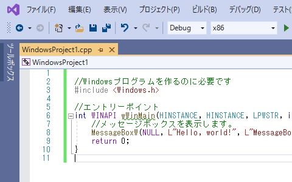

C++講習/Hello, world
概要
プログラミングの世界では、新しい環境を使うとき、簡単なコードを書いてみることが習慣になっています。
この目的は、動作させるまでの手順と、きちんとプログラムが動作するかを確かめることです。
この講習では、すでに前章で、動作することを確認できていると思います。
しかし、あのコードは説明も理解もたいへん長くなりますから、より簡単なコードで始めてみましょう。
重要語
コード
人が書いた、プログラミング言語の文章
関数
結果を返す、動作のまとまり
引数
関数に渡す値
定数
実行中に変化しない値
必要語
今回の必要語はありません。
コードとプログラム
この講習では、私たちが書くプログラミング言語による文章を、コードと呼びます。
コンピュータが実行するものは、プログラムと呼びます。
コンパイル
実は、コンピュータはC++で書かれたコードを実行できません。
実行できるのは、機械語という言語のみです。
そこで、私たちが書くコードを、機械語に翻訳してもらわなくてはいけません。
この作業を、コンパイルといいます。
Hello, world
まずは、プログラムを実行してみましょう。
なお、「Hello, world」には特に意味はありません。
しかし、確認などに用いられる簡単なコード例の代表ということができます。
今回の講習でも、わかりやすいコードとして採用しました。
コードの実行
前回のコードをCtrl+Aで全選択し、back spaceキーで消してください。
そして、以下のコードを、COPYを押してコピーし、空いたファイルに貼り付けてください。
ここで、上書き保存しておきます。
そして、F5キー、環境によってはFn+F5キーを押して、実行してみましょう。

Hello, world
//Windowsプログラムを作るのに必要です
#include <Windows.h>
//エントリーポイント
int WINAPI wWinMain(HINSTANCE, HINSTANCE, LPWSTR, int) {
//メッセージボックスを表示します。
MessageBoxW(NULL, L"Hello, world!", L"MessageBoxW", MB_OK);
return 0;
}
コードを読む
それでは、コードを読み、意味を知っていきましょう。
コードは、プログラムとして実行される順序で読むのが原則です。
関数/エントリーポイント
まず、関数とは、動作のまとまりで、結果を返すものです。
また、プログラムの中で、最初に実行される点を、エントリーポイントといいます。
Windows APIを用いたプログラムでは、wWinMain関数がエントリーポイントとなります。
ここでは説明しませんが、この行は、wWinMain関数の定義をしています。
複雑なので、しばらくは写しておけばよいでしょう。
今回は、int WINAPI wWinMain(HINSTANCE, HINSTANCE, LPWSTR, int)から実行が始まることを覚えてください。
コメント
//から行の終わりまでは、コメントになります。
この範囲に書いた文字は、プログラムの実行には影響しません。
コメントには、コードの概要や、説明を書きます。
後で読んだときや、他の人が読んだときでも、動作を把握しやすくなります。
例文では、コメントを使って注釈をつけています。
読み進める時の参考にしてください。
引数
関数は、動作のまとまりで、結果を返すものだと書きました。
これに加え、多くの関数は、動作の内容を細かく指定できるようになっています。
呼び出し時に、指定するための値を渡すことができます。
この値を引数といい、関数名(引数)と書きます。
複数の引数があるときは、,で区切ります。
また、左のものから順に、(第1引数, 第2引数, 第3引数, ... )と呼びます。
メッセージボックス
先ほどの実行時に、通知などでよく見る、小さなウィンドウが現れました。
Windowsでは、これをメッセージボックスと呼んでいます。
これを表示させたのはMessageBoxW関数です。
この関数は、Windowsに用意されている関数で、私たちユーザーが呼び出して使っています。
なお、Windowsの関数を使うために、コードの先頭に#include <Windows.h>と書いています。
MessageBoxW関数の引数
この関数は、引数を4つ受け取ります。
具体的に今回渡した引数は、表のとおりです。
第1引数については、現段階ではまだ解説できません。
本講習が終わり、次の講習に入った段階で解説します。
一旦、このままNULLを指定しておきましょう。
第2/第3引数にはそれぞれ、本文/タイトルとして表示される文字列を指定します。
第4引数は、メッセージボックスのアイコンや選択肢などのスタイルを指定します。
今回指定した引数
第1引数
NULL
第2引数
L"Hello, world!"
第3引数
L"MessageBoxW"
第4引数
MB_OK
文字列
第2/第3引数では、文字列を引数としています。
ここで重要なのが、文字の符号化方式、つまり文字コードです。
コンピュータは、文字を番号にして保管し、表示するときに番号から戻しています。
つまり、2回の変換時の変換方式に違いがあってはいけないのです。
今回、私たちはUTF-16LEという方式を使うことにしました。
これは、現在のWindowsが標準で採用しているものです。
MessageBoxWはUTF-16LE用の関数です。
ですから、引数もUTF-16LEにしてやらなければなりません。
UTF-16LEの文字列を書くには、L"文字列"と書きます。
デフォルト文字コード
個々の関数だけでなく、コード全体にわたって影響するのが、デフォルト文字コードです。
Visual Studioでは、UTF-16LEになっています。
Visual Studioを使わない場合、コンパイラの実行時にUTF-16LEと指定できます。
あるいは、コードの一番上に#define UNICODEと書いてもよいです。
これらの方法で指定しなければ、ASCIIとして処理される可能性が高いです。
定数
第4引数には、スタイルを表す、Windowsが決めた整数値を指定する必要があります。
しかし、数値を覚えるのは難しいですし、後で読んだときの可読性も低いです。
そこで、数値にアルファベットの名前を付け、定数と呼んでいます。
スタイル
MessageBoxW関数に指定できるスタイルは、表の通りです。
この中から定数A | 定数B | 定数C ...と書いて、複数の定数を指定することもできます。
スタイル
MB_OK
OKのボタンを表示します。標準のボタンです。
MB_OKCANCEL
OK、キャンセルのボタンを表示します。
MB_ABORTRETRYIGNORE
中止、再試行、無視のボタンを表示します。
MB_YESNOCANCEL
はい、いいえ、キャンセルのボタンを表示します。
MB_RETRYCANCEL
再試行、キャンセルのボタンを表示します。
MB_CANCELTRYCONTINUE
キャンセル、再試行、続行のボタンを表示します。
MB_ICONERROR
一時停止の標識アイコンを表示します。
MB_ICONWARNING
感嘆符のアイコンを表示します。
MB_ICONINFORMATION
小文字のiを丸で囲んだアイコンを表示します。
インフォメーションマークともいいます。
実行結果
今回、MessageBoxW関数の実行結果は利用していません。
しかし、return 0;の文で、wWinMain関数が正常に終了したことを知らせています。
練習問題
理解できたか確認するために、練習問題を解いてもらいます。
メッセージボックスに表示する文字列を変更してみましょう。
また、「はい、いいえ」のボタンと、「インフォメーションマーク」を表示させてください。
解答
練習問題解答
#include <Windows.h>
int WINAPI wWinMain(HINSTANCE, HINSTANCE, LPWSTR, int) {
MessageBoxW(NULL, L"Are you a student?", L"Choose", MB_YESNO | MB_ICONINFORMATION);
return 0;
}